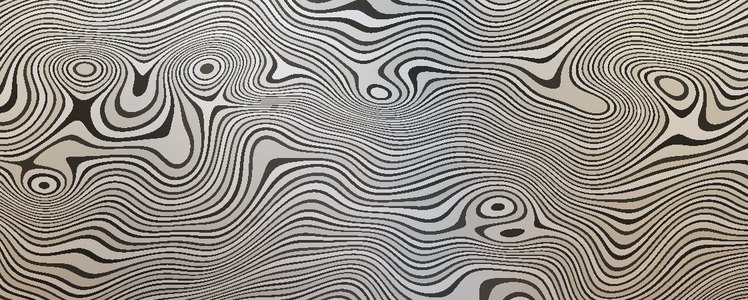
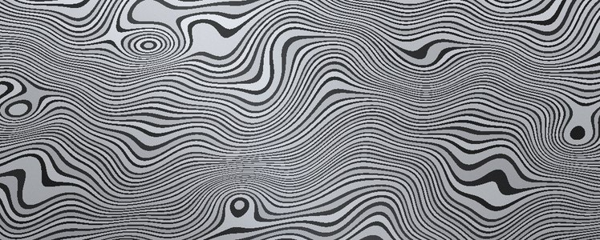
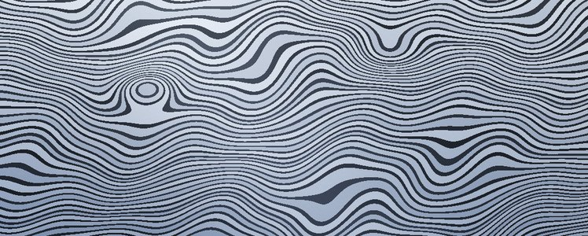
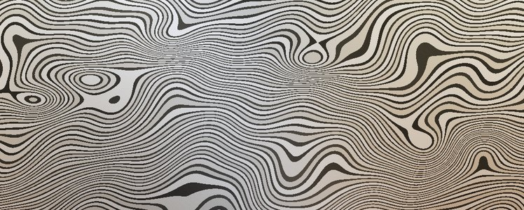
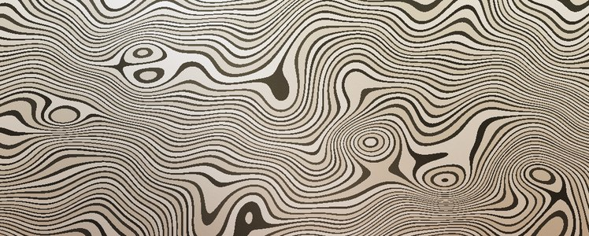
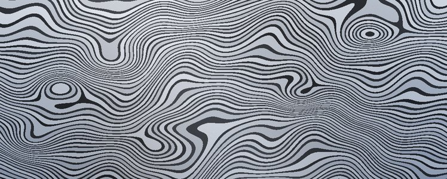

Historia

Dziś · 13 bitew · cieplej2 592 WN8

Wczoraj · 9 bitew · jak zwykle2 078 WN8

19 listopada · 7 bitew · chłodniej1 386 WN8

18 listopada · 8 bitew · cieplej2 608 WN8

17 listopada · 6 bitew · cieplej2 898 WN8

16 listopada · 10 bitew · chłodniej1 707 WN8